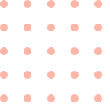

<div class="circle_dots">
  
  <svg _ngcontent-bbj-c16=""  fill="none" xmlns="http://www.w3.org/2000/svg" xmlns:xlink="http://www.w3.org/1999/xlink" width="56" height="56" viewBox="0 0 56 56" class="medium-circle absolute transform translate-x-64 -translate-y-8 rounded-full shadow-xl"><defs _ngcontent-bbj-c16=""><filter _ngcontent-bbj-c16="" id="a" x="0" y="0" width="56" height="56" filterUnits="userSpaceOnUse"><feOffset _ngcontent-bbj-c16="" dy="3" input="SourceAlpha"></feOffset><feGaussianBlur _ngcontent-bbj-c16="" stdDeviation="3" result="b"></feGaussianBlur><feFlood _ngcontent-bbj-c16="" flood-opacity="0.161"></feFlood><feComposite _ngcontent-bbj-c16="" operator="in" in2="b"></feComposite><feComposite _ngcontent-bbj-c16="" in="SourceGraphic"></feComposite></filter></defs><g _ngcontent-bbj-c16="" transform="matrix(1, 0, 0, 1, 0, 0)" class="b"><circle _ngcontent-bbj-c16="" cx="19" cy="19" r="19" transform="translate(9 6)" class="a"></circle></g></svg>
  <svg _ngcontent-bbj-c16=""  fill="none" xmlns="http://www.w3.org/2000/svg" xmlns:xlink="http://www.w3.org/1999/xlink" width="56" height="56" viewBox="0 0 56 56" class="medium-circle absolute transform translate-x-64 -translate-y-8 rounded-full shadow-xl"><defs _ngcontent-bbj-c16=""><filter _ngcontent-bbj-c16="" id="a" x="0" y="0" width="56" height="56" filterUnits="userSpaceOnUse"><feOffset _ngcontent-bbj-c16="" dy="3" input="SourceAlpha"></feOffset><feGaussianBlur _ngcontent-bbj-c16="" stdDeviation="3" result="b"></feGaussianBlur><feFlood _ngcontent-bbj-c16="" flood-opacity="0.161"></feFlood><feComposite _ngcontent-bbj-c16="" operator="in" in2="b"></feComposite><feComposite _ngcontent-bbj-c16="" in="SourceGraphic"></feComposite></filter></defs><g _ngcontent-bbj-c16="" transform="matrix(1, 0, 0, 1, 0, 0)" class="b"><circle _ngcontent-bbj-c16="" cx="19" cy="19" r="19" transform="translate(9 6)" class="a"></circle></g></svg>
  <svg _ngcontent-bbj-c16=""  fill="none" xmlns="http://www.w3.org/2000/svg" xmlns:xlink="http://www.w3.org/1999/xlink" width="37" height="37" viewBox="0 0 37 37" class="small-circle absolute transform translate-x-64 -translate-y-8 rounded-full shadow-xl"><defs _ngcontent-bbj-c16=""><filter _ngcontent-bbj-c16="" id="a" x="0" y="0" width="37" height="37" filterUnits="userSpaceOnUse"><feOffset _ngcontent-bbj-c16="" dy="3" input="SourceAlpha"></feOffset><feGaussianBlur _ngcontent-bbj-c16="" stdDeviation="3" result="b"></feGaussianBlur><feFlood _ngcontent-bbj-c16="" flood-opacity="0.161"></feFlood><feComposite _ngcontent-bbj-c16="" operator="in" in2="b"></feComposite><feComposite _ngcontent-bbj-c16="" in="SourceGraphic"></feComposite></filter></defs><g _ngcontent-bbj-c16="" transform="matrix(1, 0, 0, 1, 0, 0)" class="b"><circle _ngcontent-bbj-c16="" cx="9.5" cy="9.5" r="9.5" transform="translate(9 6)" class="a"></circle></g></svg>
  
</div>
<app-form></app-form>
